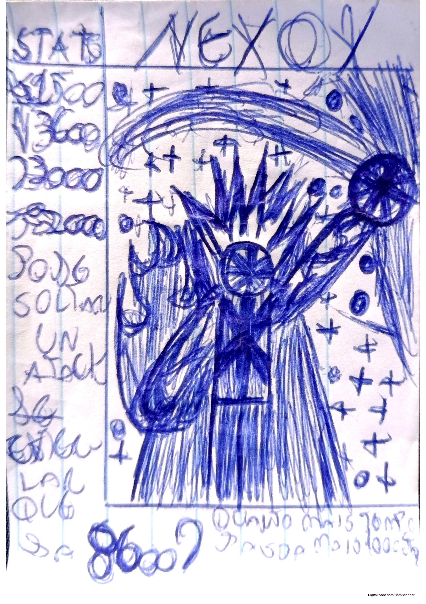

Bom, M.O.M. significa *Maintenance, Observation, Monsters*. Em resumo, é uma organização responsável pela manutenção e observação de monstros. Ela é uma organização ancestral, criada desde antes de os ancestrais dos humanos sequer pensarem em moer ossos com pedras. Teoricamente, os primeiros membros da M.O.M. foram "humanos" que consumiram os cérebros de alienígenas que morreram de alguma forma na Terra. Eles distribuem, organizam e fazem a manutenção dos monstros, entidades que são hostis ou espécies com uma diferença mínima da *Coluna de Adão*, uma parte presente em todos os animais da Terra. Fazer a manutenção dos monstros significa movê-los de lugar, entre outras coisas. Um exemplo são as *Aberrações*, uma espécie muito hostil à vida de qualquer animal. Elas são criaturas gigantes que ultrapassam árvores comuns em tamanho. A manutenção delas consiste em fornecer um tipo de ração para controlar sua fome imensa, evitando que ataquem outros animais da floresta. Caso haja necessidade, a M.O.M. pode neutralizá-las ou movê-las para outra região onde exista uma fauna praticamente morta. Uma das principais importâncias da M.O.M. é impedir que armas, objetos, lugares, entidades e criaturas venham a público, evitando que pessoas ou outras organizações utilizem tudo isso de má-fé, como por exemplo a *D.R.I.S.C.*